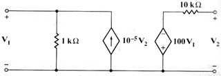

C05 DC analysis: Find H parameters of net with two dependent sources
Question. Find the four h parameters for shown biport.

Solution:
1) Label nodes and elements. Erase all unnecessary variables in current folder. Define a variable containing circuit description. I used this description:
"r1,1,0,1000.; r10,3,2,10000.; jd,0,1,1E-005*v2; ed,0,3,100*v1" àcir
2) Run the ports tools, specifying the terminal nodes, which
are 1 and 2.
sq\port(cir,1,2)
Now the program displays a dialog box, in which you have to specify
the desired parameters (which you set to h), give a name to the
parameters (p is a good name) and specify the analysis you want
to perform (in this case DC). When done, press Enter. The process is complex,
so you have to wait some time. After a while, the calculator displays...
Done
3) Since your parameters are h and their name is p, the answers are stored in the following variables: hp11, hp12, hp21 and hp22. They are also shown in screen. Suppose you want to retrieve them after they've been displayed in screen. You can ask for them.
hp11
1000
hp12
0.01
hp21
10
hp22
.0002
Answer: The parameters obtained are the right ones.